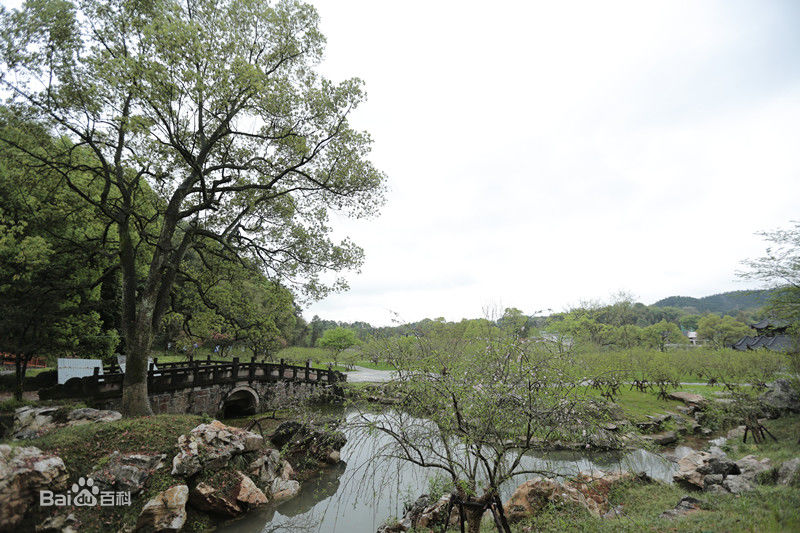

我的家乡
常德，古称武陵、朗州，别名“柳城”，是湖南省辖地级市，省域副中心城市。常德位于湖南北部，江南洞庭湖西侧，史称“川黔咽喉，云贵门户”。
“常德”，二字由来：常德城名源自《老子》“为天下溪，常德不离”；历史故事“刘海砍樵”、“孟姜女哭长城”以及陶渊明笔下的《桃花源记》等浪漫主义情结贯穿常德城二千多年的历史，开创了常德独有的“善德文化”。
是谓——桃花源
著名景点
桃花源
忽逢桃花林，夹岸数百步，中无杂树，芳草鲜美，落英缤纷。……复行数十步，豁然开朗。——《桃花源记》
柳叶湖
荆楚文化的发祥地之一，是明末内阁首辅杨嗣昌、清代大画家髡残、武昌首义智囊刘复基的故乡。

常德美食
牛肉粉
“津市牛肉粉”是湖南省最有名的特色小吃，味道鲜美，香滑不油，吃起来润滑可口、风味独具。
武陵擂茶
武陵擂茶在洞庭湖区源远流长，具有生津止渴，清热解毒，消炎去疾之功能。